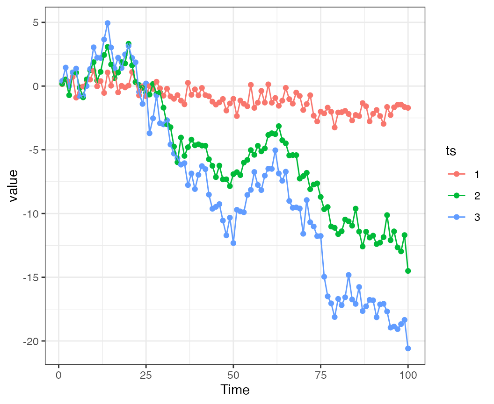
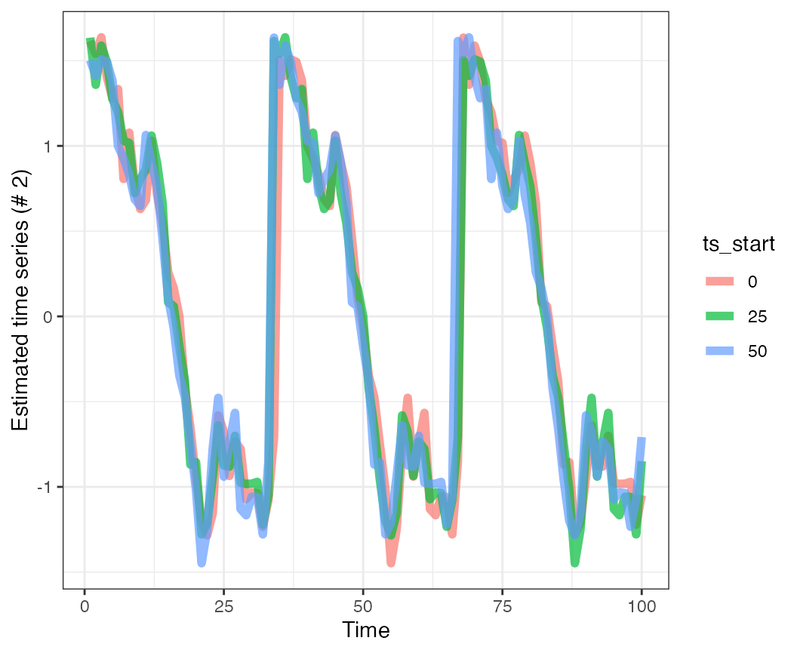

Combining data with bayesdfa
Eric J. Ward, Sean C. Anderson, Mary E. Hunsicker, Mike A. Litzow, Luis A. Damiano, Mark D. Scheuerell, Elizabeth E. Holmes, Nick Tolimieri
2021-04-29
Source:vignettes/combining_data.Rmd
combining_data.RmdFor some applications using DFA, datasets may need to be combined from several data sources, and they may differ in time series length (or precision). Here we’ll use some simple examples using fit_dfa() and to illustrate some cautionary points.
Let’s load the necessary packages:
library(bayesdfa)
library(ggplot2)
library(dplyr)
library(rstan)
chains = 1
iter = 10
#library(viridis)Example
First, let’s simulate some simple data with sim_dfa(). First, using just a 1 - trend model. This example has 3 time series, and is simulated from 1 underlying trend. The first time series doesn’t load heavily on the trend (it’s mostly generated via white noise) but time series 2-3 have stronger loadings on the trend.
set.seed(123)
loadings = matrix(0, 3, 1)
loadings[1,1] = c(0.1)
loadings[2:3,1] = runif(2, 0.4,1)
round(loadings,3)## [,1]
## [1,] 0.100
## [2,] 0.573
## [3,] 0.873
sim = sim_dfa(num_trends = 1, num_years = 100,
num_ts = 3, loadings_matrix = loadings,
sigma=0.6)Here we can see that time series 1 is more variable because the random component is playing a relatively larger role.


Let’s initially treat the first ~ 50 time points as a burn in, and fit a DFA model to the latter half of the time series, using all data. We don’t really have to rotate trends (because there’s just 1). The loadings are estimated ok for trend 1, but underestimated for the others.
fit_1 = fit_dfa(y = sim$y_sim[,51:100], num_trends = 1, chains=chains, iter=iter)## Warning: There were 5 divergent transitions after warmup. See
## http://mc-stan.org/misc/warnings.html#divergent-transitions-after-warmup
## to find out why this is a problem and how to eliminate them.## Warning: Examine the pairs() plot to diagnose sampling problems## Warning: The largest R-hat is NA, indicating chains have not mixed.
## Running the chains for more iterations may help. See
## http://mc-stan.org/misc/warnings.html#r-hat
r = rotate_trends(fit_1)
round(r$Z_rot_mean,3)## 1
## 1 0.881
## 2 4.551
## 3 1.412Now, we’ll pretend that in time steps 1:50 we have observations from time series 1 (but not the others). We’ll fit several additional models, adding in back data points in steps of 10, and going backwards in time. All these runs would use time points 51:100 for time series 2 and 3, but they would include time steps 51:100, then 41:100, 31:100, etc. for time series 1.
Note for comparison purposes, we’ll also standardize all time series 1 time before passing them in as an argument. Time series # 1 won’t be re-scaled, but will be re-centered for each iteration. This is important because the time-series are non-stationary.
output = expand.grid("ts_start"=c(0,25,50),
"x"=1:100, "estimated_trend"=NA, "obs"=NA)
l = matrix(0, 3, 3)
for(i in 1:nrow(l)) {
idx = c(1,26,51) # seq(1,60,10)[nrow(l)+1-i]
Y = sim$y_sim
Y = t(scale(t(Y)))
Y[1,1:(idx-1)] = NA
Y[2:3,1:50] = NA
fit_2 = fit_dfa(y = Y, num_trends = 1, chains=1, iter=10, zscore = FALSE)
r = rotate_trends(fit_2)
l[i,] = c(r$Z_rot_mean)
output$estimated_trend[which(output$ts_start==(idx-1))] = scale((r$Z_rot_mean %*% r$trends_mean)[2,])
output$obs[which(output$ts_start==(idx-1))] = Y[2,51:100]
}Now we can look at the effects of adding in the extra data from time series 2. Here are the predictions for time series 2 over time steps 51:100, adding more data in from time series 1. What this shows is that in general the trends are the same – though there are nuanced differences between them.

As a cautionary note, any time time series of different lenghts are combined using similar approaches, simulations should be done to try to estimate the influence of adding new data to shared trends or other quantities of interest.